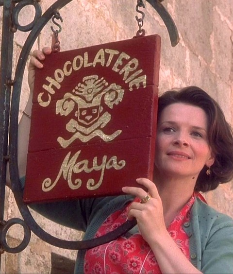

Inside the box
Small Temptations
From the window
Truffles, six180 F
Dark ganache in cocoa, hazelnut or chili sugar.
Mendiants150 F
Dark discs set with almond, hazelnut, raisin and fig.
Candied orange peel170 F
Slow candied, then half dipped in bitter chocolate.
The Easter box1959 F
Two dozen assorted, tied in red ribbon.
We post anywhere. Even Venice.
At the counter
Chili hot chocolate60 F
Milk steeped with red pepper and cinnamon, dark bittersweet whisked in, flaky salt. Tiny cups.
A little cocoa40 F
Sweet, warm and mild, for small ones.
A second cup for Pantoufle.
Easter vin chaud80 F
Southern red warmed with orange, spices and honey.
Armande’s birthday supper
Duck confit900 F
Salted overnight, cooked slow in its own fat, then crisped. Duck fat potatoes, green salad.
Chocolate mousse120 F
Dark bittersweet and whipped eggs in little cups, a pinch of chili salt.

Up went our sign, the day the north wind blew us in.
Vianne asks
What do you see?
Spin the painted plate and tell her. She will find the chocolate to match.
Prices in francs, subject to change with the wind. Wrapped by Josephine. Place de l’Église. Tel. 20.00. Lent, 1959.